Proprietary to General Electric Company
Direction 5440000, Rev# 5
Signa HDxt Service Methods
Module Version 1.0, Version Date 4/26/07
Proprietary to General Electric Company |
This file contains test data concerning the Dynamic Disable and Direct Drive Bias circuits. Five different samples are taken for each condition. Note that a small variation between samples is not unusual. See the comments to the right of each section of data for an explanation of what is being checked. Note that this document is divided into three sections. Please make sure you are referencing the correct section for your system.
Section 1, 1.5T System, note that the data is the same for all types of LPCA’s.
Section 2, 3.0T System With The New Forward Production LPCA.
Section 3, 3.0T Head Mode With Old LPCA.
Table 1: 1.5T Head Mode, Any LPCA
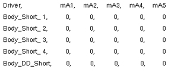 | In 1.5T Head Mode the Dynamic Disable lines are checked for current leakage. Since no high voltage is applied during this mode no current should be flowing. Current flow in this mode might indicate that the Driver Module circuitry is leaking. |
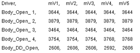 | In this test the Dynamic Disable lines are forward-biased. Voltage drops like those shown at the left should be seen. Circuits exhibiting significantly higher voltage drops indicate that the circuit may be open (line is disconnected) or that the circuit has a high resistance (poor connection). Anything over 7000 usually indicates an open circuit. Check the connections in the circuit. |
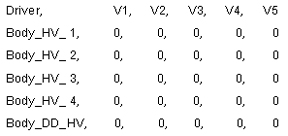 | In 1.5T Head Mode no high voltage is applied so these results should always show zero (0) volts. If voltage is seen here then this would indicate that the Driver Module is malfunctioning. |
Table 2: 1.5T Body Mode, Any LPCA
 | In 1.5T Body Mode the Dynamic Disable lines are reverse-biased with high voltage so no current should flow. A significant amount of current flow would indicate a short-circuit condition on the circuit. Large current flow indicates something like a shorted PIN diode or shorted cable while smaller current flow may indicate a leaky PIN diode. Leaky PIN diodes can be a source of noise. |
 | This data is, for the most part, not valid and can be ignored. |
 | In 1.5T Body Mode high voltage is applied so the results should always look similar to what is shown on the left. |
Table 3: 1.5T Surface Mode, Any LPCA
 | In 1.5T Surface Mode the Dynamic Disable lines are reverse-biased during transmit so no current should flow. A significant amount of current flow would indicate a short-circuit condition on the circuit. Large current flow indicates something like a shorted PIN diode or shorted cable while smaller current flow may indicate a leaky PIN diode. Leaky PIN diodes can be a source of noise. |
 | In this test the Dynamic Disable lines are forward-biased. Voltage drops like those shown at the left should be seen. Circuits exhibiting significantly higher voltage drops indicate that the circuit may be open (line is disconnected) or that the circuit has a high resistance (poor connection). Anything over 7000 usually indicates an open circuit. Check the connections in the circuit. |
 | In 1.5T Surface Mode high voltage is applied during transmit so the results should always look similar to what is shown on the left. These are less than what was seen in the 1.5T Body Mode HV Test due to voltage sag. This is normal. |
Illustration 1: Forward Production LPCA
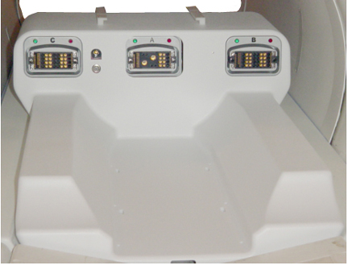
Table 4: 3.0T Head Mode With New LPCA
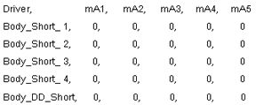 | In 3.0T Head Mode the Dynamic Disable lines are reverse-biased with high voltage so no current should flow. A significant amount of current flow would indicate a short-circuit condition on the circuit. Large current flow indicates something like a shorted PIN diode(s), shorted cable, or other shorted component while smaller current flow may indicate a leaky PIN diode. Leaky PIN diodes can be a source of noise. |
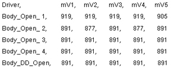 | This data is, for the most part, not valid and can be ignored. |
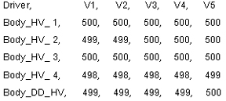 | In 3.0T Head Mode high voltage is applied so the results should always look similar to what is shown on the left. |
Table 5: 3.0T Body Mode With New LPCA
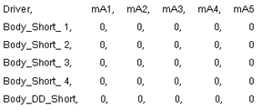 | In 3.0T Body Mode the Dynamic Disable lines are checked for current leakage. Since no high voltage is applied during this mode no current should be flowing. Current flow in this mode might indicate that the Driver Module circuitry is leaking. |
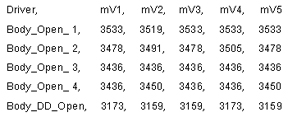 | In this test the Dynamic Disable lines are forward-biased. Voltage drops like those shown at the left should be seen. Circuits exhibiting significantly higher voltage drops indicate that the circuit may be open (line is disconnected) or that the circuit has a high resistance (poor connection). Anything over 7000 usually indicates an open circuit. Check the connections in the circuit. |
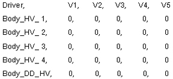 | In 3.0T Body Mode no high voltage is applied so these results should always show zero (0) volts. If voltage is seen here then this would indicate that the Driver Module is malfunctioning. |
Table 6: 3.0T Surface Mode With New LPCA
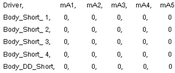 | In 3.0T Surface Mode the Dynamic Disable lines are reverse-biased during receive so no current should flow. A significant amount of current flow would indicate a short-circuit condition on the circuit. Large current flow indicates something like a shorted PIN diode(s), shorted cable, or other shorted component while smaller current flow may indicate a leaky PIN diode. Leaky PIN diodes can be a source of noise. |
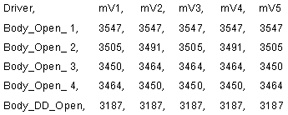 | In this test the Dynamic Disable lines are forward-biased. Voltage drops like those shown at the left should be seen. Circuits exhibiting significantly higher voltage drops indicate that the circuit may be open (line is disconnected) or that the circuit has a high resistance (poor connection). Anything over 7000 usually indicates an open circuit. Check the connections in the circuit. |
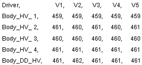 | In 3.0T Surface Mode high voltage is applied during receive so the results should always look similar to what is shown on the left. These are less than what was seen in the 3.0T Head Mode HV Test due to voltage sag. This is normal. |
Illustration 2: 3.0T Head Mode With Old LPCA
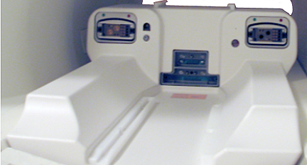
Table 7: 3.0T Head Mode With Old LPCA
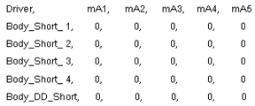 | In 3.0T Head Mode the Dynamic Disable lines are reverse-biased with high voltage so no current should flow. A significant amount of current flow would indicate a short-circuit condition on the circuit. Large current flow indicates something like a shorted PIN diode(s), shorted cable, or other shorted component while smaller current flow may indicate a leaky PIN diode. Leaky PIN diodes can be a source of noise. |
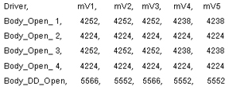 | This data is, for the most part, not valid and can be ignored. |
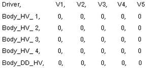 | In 3.0T Head Mode high voltage is applied so the results should always look similar to what is shown on the left. |
Table 8: 3.0T Body Mode With Old LPCA
 | In 3.0T Body Mode the Dynamic Disable lines are checked for current leakage. Since no high voltage is applied during this mode no current should be flowing. Current flow in this mode might indicate that the Driver Module circuitry is leaking. |
 | In this test the Dynamic Disable lines are forward-biased. Voltage drops like those shown at the left should be seen. Circuits exhibiting significantly higher voltage drops indicate that the circuit may be open (line is disconnected) or that the circuit has a high resistance (poor connection). Anything over 7000 usually indicates an open circuit. Check the connections in the circuit. |
 | In 3.0T Body Mode no high voltage is applied so these results should always show zero (0) volts. If voltage is seen here then this would indicate that the Driver Module is malfunctioning. |
Table 9: 3.0T Surface Mode With Old LPCA
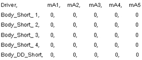 | In 3.0T Surface Mode the Dynamic Disable lines are reverse-biased during receive so no current should flow. A significant amount of current flow would indicate a short-circuit condition on the circuit. Large current flow indicates something like a shorted PIN diode(s), shorted cable, or other shorted component while smaller current flow may indicate a leaky PIN diode. Leaky PIN diodes can be a source of noise. |
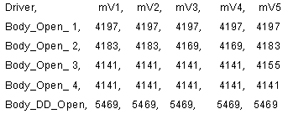 | In this test the Dynamic Disable lines are forward-biased. Voltage drops like those shown at the left should be seen. Circuits exhibiting significantly higher voltage drops indicate that the circuit may be open (line is disconnected) or that the circuit has a high resistance (poor connection). Anything over 7000 usually indicates an open circuit. Check the connections in the circuit. |
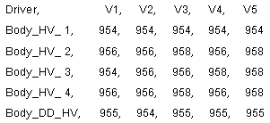 | In 3.0T Surface Mode high voltage is applied during receive so the results should always look similar to what is shown on the left. These are less than what was seen in the 3.0T Head Mode HV Test due to voltage sag. This is normal. |